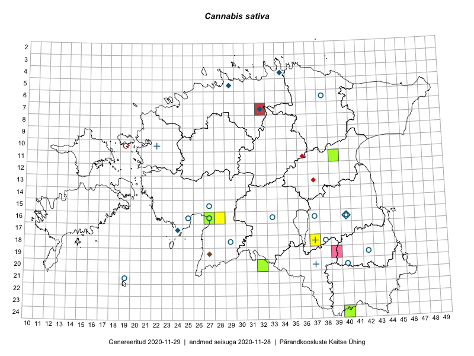

Cannabis sativa — harilik kanep
Cannabaceae :: Cannabis sativa L. (42)

Kaart põhineb 43 kirjel:
vaatlusi 8
herbaareksemplare 34
PKÜ kirjeid1 1
Taime kaasaegsed ja ajaloolised leiukohad asuvad 24 ruudus.
Tingmärgid ja ruutude arvud periooditi (U2 / V3 )
█ 2006–2020 (6/–)
◆/◇ 1971–2005 (6/6)
○ 1921–1970 (12/2)
+ kuni 1920 (3/0)
× hävinud (–/0)
? kaheldav (–/0)
| Ruut | Leidja(d) | Leiuaeg | Kirje |
|---|---|---|---|
| 04-34 | 1974–1976 | ruut/ala: Cannabis sativa L. | |
| 07-32 | L. Viljasoo, M. Leht | 1984-07-20 | ruut/ala: Cannabis sativa L. |
| 16-40 | Linda Viljasoo, Maret Kask, A. Remmel | 1947–1981 | ruut/ala: Cannabis sativa L. |
| 17-24 | Ülo Niinemets, Toomas Kukk | 1987-06-20 | ruut/ala: Cannabis sativa L. |
| 21-19 | Julius Gröntved | 1929 | ruut/ala: Cannabis sativa L. |
| 24-40 | Sander Laherand, Ott Luuk, Susanna Vain | 2016-06-14 | ruut/ala: Cannabis sativa L. |
| 18-37 | Ott Luuk, Peedu Saar | 2019-07-15 | ruut/ala: Cannabis sativa L. |
| 16-28 | Indrek Tammekänd | 2019-05-29–2019-08-23 | ruut/ala: Cannabis sativa L. |
| 16-25 | Agnes Ojaveer, Helga Tamm | 1962-08-01 | TAA0033886: Cannabis sativa L. |
| 16-25 | Agnes Ojaveer, Helga Tamm | 1962-08-01 | TAA0033887: Cannabis sativa L. |
| 16-40 | Visolde Puusepp | 1971-10-18 | TAA0033888: Cannabis sativa L. |
| 16-37 | Maret Kask | 1962-07-02 | TAA0033890: Cannabis sativa L. |
| 16-37 | Maret Kask | 1962-07-02 | TAA0033891: Cannabis sativa L. |
| 18-37 | 1907-07-18 | TAA0033893: Cannabis sativa L. | |
| 16-40 | Silvia Krastin | 1948-06-26 | TAA0033895: Cannabis sativa L. |
| 16-40 | Silvia Krastin | 1948-06-26 | TAA0033896: Cannabis sativa L. |
| 15-27 | Vilma Kuusk | 1964-07-07 | TAA0033897: Cannabis sativa L. |
| 16-40 | Hugo Sogenbits | 1929-07-15 | TAA0033900: Cannabis sativa L. |
| 16-40 | Linda Viljasoo | 1957-09-07 | TAA0033901: Cannabis sativa L. |
| 16-40 | A. Remmel | 1956-07-06 | TU272740: Cannabis sativa L. |
| 16-40 | A. Remmel | 1962-07-07 | TU272741: Cannabis sativa L. |
| 16-40 | A. Remmel | 1969-08-29 | TU272742: Cannabis sativa L. |
| 16-40 | A. Remmel | 1954-09-20 | TU272743: Cannabis sativa L. |
| 16-27 | A. Remmel | 1969-09-21 | TU272744: Cannabis sativa L. |
| 16-33 | A. Remmel | 1969-08-20 | TU272745: Cannabis sativa L. |
| 06-38 | A. Remmel | 1958-08-08 | TU272746: Cannabis sativa L. |
| 19-42 | L. Pihlapuu | 1964-07-16 | TU272750: Cannabis sativa L. |
| 20-37 | C. Regel | 1919-07-17 | TU272751: Cannabis sativa L. |
| 20-40 | L. Pihlapuu | 1950-09-04 | TU272753: Cannabis sativa L. |
| 05-29 | Urmas Laansoo | 1998-09-30 | TAM0073478: Cannabis sativa L. |
| 05-29 | Urmas Laansoo | 1998-09-30 | TAM0073479: Cannabis sativa L. |
| 05-29 | Urmas Laansoo | 1998-09-30 | TAM0073480: Cannabis sativa L. |
| 05-29 | Urmas Laansoo | 1998-09-30 | TAM0073481: Cannabis sativa L. |
| 10-22 | Th. Frese | 1855 | TAM0089401: Cannabis sativa L. |
| 11-39 | Peedu Saar, Eerik Leibak | 2015-08-18 | TAA0116486: Cannabis sativa L. |
| 18-29 | Ellen Vilbaste | 1966-07-17 | TAA0115244: Cannabis sativa L. |
| 18-38 | Elise Laas (Muuga) | 1924-08-24 | TAA0114918: Cannabis sativa L. |
| 24-40 | Ott Luuk, Sander Laherand, Susanna Vain | 2016-06-14 | TAA0144825: Cannabis sativa L. |
| 16-27 | Indrek Tammekänd | 2018-09-03 | TAA0147651: Cannabis sativa L. |
| 20-32 | Ott Luuk, Meeli Mesipuu | 2016-09-18 | TAA0147312: Cannabis sativa L. |
| 16-27 | Indrek Tammekänd | 2018-06-16 | TAA0147722: Cannabis sativa L. |
| 16-27 | Indrek Tammekänd | 2019-07-30 | TAA0151917: Cannabis sativa L. |
| 19-27 | 2003-08-17 | PKÜ: 11358 |
Pärandkoosluste Kaitse Ühingu (PKÜ) andmebaas sisaldab inventeeritud koosluste kirjeldusi ja liigiloendeid. Kõige enam on andmeid niidutaimede kohta.↩︎
Ruutude arv uue atlase andmekogu järgi. Muuhulgas arvestab vanemat herbaariumi, 2005. aasta atlase välitöölehtedelt uuesti digitaliseeritud andmeid jne. Uue atlase andmekogust pärinevad andmed on kaardile kantud siniste sümbolitega.↩︎
Ruutude arv 2005. aasta atlase (Kukk, T., Kull, T., Eesti taimede levikuatlas. Eesti Maaülikool, Põllumajandus- ja Keskkonnainstituut, Tartu, 2005) järgi. Andmeallikana on kasutatud levik.exe programmi, kus igas ruudus on registreeritud vaid uusim leid. Seetõttu on vanemate perioodide kohta andmed puudulikud. Kasutatud levik.exe andmestikus leidub mõningaid kõrvalekaldeid atlase trükis ilmunud versioonist, sagedamini tarnade ja käpaliste seas. Lisaks leidub selles andmestikus valik liike (peamiselt väheste leidudega tulnuktaimed), mille kaarte trükis ei avaldatud. Vana atlase andmed ruutudest, milles ei ole uue atlase andmekogus leide enne 2006. aastat, on kaardil esitatud punaste sümbolitega. Vana atlase andmetel hävinud ja kaheldavaid leiukohti pole hilisemate (taas)leidude põhjal korrigeeritud.↩︎